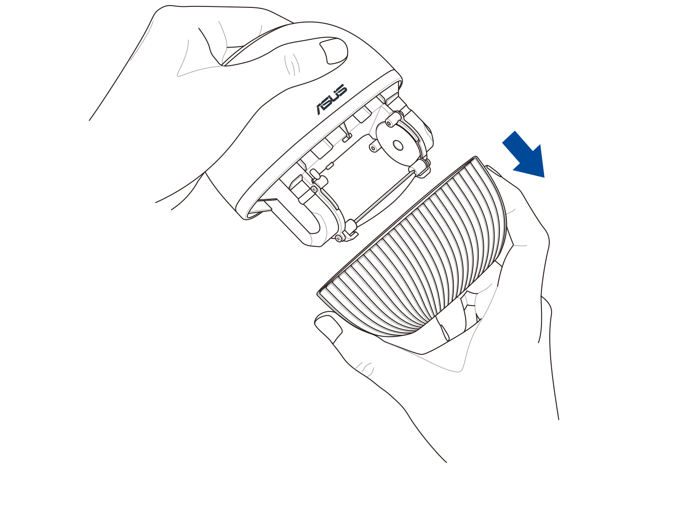

Follow the steps below to clean and calibrate your PureGo:
1.Press both sides of the detachable bottom filter cover and remove it from the PureGo.
2.Wet a lens cleaning cloth or cotton swab with clean water, and clean both glass sides of the optical detection chamber.

3.Rinse the bottom filter cover with clean water, then wipe it dry using a soft cloth and reattach it to the PureGo.
4. After cleaning the PureGo, place the PureGo in clean water. Long press until the LED ring lights up blue and perform a recalibration to make sure the PureGo was properly cleaned.
5. The recalibration process is complete once the blue light turns off.